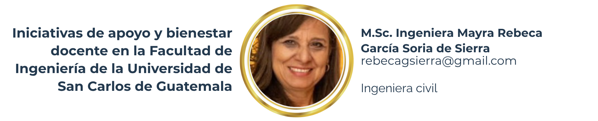

2 Iniciativas de apoyo y bienestar docente en la Facultad de Ingeniería de la Universidad de San Carlos de Guatemala

2.1 Resumen
Se realizó un análisis sobre las diversas iniciativas implementadas por la Facultad de Ingeniería de la Universidad de San Carlos de Guatemala (FIUSAC) orientadas al fortalecimiento del bienestar docente y la mejora de las condiciones laborales. Se revisaron los programas impulsados por la Unidad de Educación a Distancia (UEDi), el Centro de Cálculo e Investigación Educativa (CCIE) y las políticas institucionales que promueven la formación continua y la innovación pedagógica. A través del análisis de estas estrategias ha podido evidenciarse el compromiso institucional por garantizar un entorno académico más humano, equilibrado y productivo. Asimismo, se reflexiona sobre la importancia de establecer mecanismos de evaluación del impacto de dichas iniciativas en la reducción del agotamiento profesional y la mejora de la satisfacción laboral docente.
2.2 Abstract
An analysis is carried out on the various initiatives implemented by the Faculty of Engineering at the University of San Carlos of Guatemala (FIUSAC) aimed at strengthening faculty well-being and improving working conditions. It highlights programs promoted by the Distance Education Unit (UEDi), the Computing and Educational Research Center (CCIE), and institutional policies that promote continuous training, occupational health, and pedagogical innovation. Through these strategies, the Faculty seeks to reduce workload stress, enhance motivation, and foster a more resilient and collaborative academic environment. The study emphasizes the relevance of maintaining healthy work conditions and developing systematic assessment tools to measure the effectiveness of these initiatives in preventing burnout and improving teaching quality.
2.3 Palabras claves
Bienestar laboral, docencia universitaria, educación a distancia, UEDi, Facultad de Ingeniería, USAC.
2.4 Introducción
La Facultad de Ingeniería de la Universidad de San Carlos de Guatemala (FIUSAC) enfrenta, como muchas instituciones de educación superior, desafíos relacionados con la sobrecarga laboral, la adaptación tecnológica y la necesidad de fortalecer el bienestar de sus docentes. Estas condiciones han impulsado la creación de estrategias institucionales orientadas no solo a optimizar los procesos de enseñanza-aprendizaje, sino también a mejorar las condiciones del entorno laboral docente.
Entre las principales iniciativas se destacan la labor de la Unidad de Educación a Distancia (UEDi) y del Centro de Cálculo e Investigación Educativa (CCIE), que han contribuido al fortalecimiento de las competencias digitales, el acompañamiento académico y la promoción del bienestar profesional dentro de la comunidad universitaria.
2.5 Artículo
Desarrollo y análisis
La UEDi se ha convertido en un pilar fundamental para la actualización docente en el uso de plataformas virtuales como Moodle. A través de capacitaciones, tutoriales paso a paso y soporte técnico personalizado, ha permitido que los catedráticos se adapten a los entornos híbridos con mayor facilidad y confianza. Este apoyo ha reducido significativamente la ansiedad tecnológica y ha promovido una enseñanza más dinámica y eficiente. Por su parte, el CCIE ofrece asesoría pedagógica y tecnológica, acompañando a los docentes en la planificación de clases y el uso de recursos digitales. Este trabajo colaborativo ha contribuido a disminuir la frustración asociada al manejo de tecnologías educativas y ha fortalecido el desarrollo profesional docente. Además, la FIUSAC ha impulsado programas de formación continua enfocados en competencias digitales, gestión de aula virtual y pedagogía universitaria. Estas capacitaciones aumentan la eficiencia del trabajo académico y la confianza del profesorado, a la vez que fomentan el sentido de pertenencia institucional.
Las políticas de bienestar laboral promovidas por la Facultad incluyen espacios de mentoría, redes de apoyo entre docentes y asesorías psicosociales. Estas acciones favorecen el equilibrio emocional y la salud mental del profesorado, aspectos esenciales para prevenir el síndrome de Burnout y mejorar la calidad educativa.
La formación continua ha sido un pilar fundamental para mi desarrollo profesional en este tiempo de cambios constantes en la educación superior pública. A pesar de las limitaciones existentes como la escasez de recursos, las dificultades tecnológicas y las sobrecargas laborales, las oportunidades de actualización y capacitación docente han permitido adaptarme a las nuevas demandas educativas con mayor seguridad y competencia. La participación en cursos, talleres y programas de formación sobre el uso de Tecnologías de la Información y la Comunicación (TIC), metodologías activas y evaluación por competencias ha fortalecido mis habilidades pedagógicas, mejorado la calidad de mis clases y enriquecido mi capacidad para responder de manera creativa y flexible a los retos actuales. Además, la formación continua ha contribuido a mantener mi motivación y sentido de propósito dentro de la docencia, fomentando el intercambio de experiencias con otros colegas y promoviendo una actitud de mejora permanente. En este contexto, la actualización profesional no solo representa un beneficio individual, sino también un compromiso con la excelencia académica y con el fortalecimiento de la universidad pública como espacio de transformación social y generación de conocimiento.
Entorno laboral docente saludable
Un entorno laboral docente saludable se caracteriza por el equilibrio entre las demandas laborales, la autonomía profesional y el apoyo institucional. La creación de ambientes colaborativos, la comunicación asertiva y la gestión adecuada de los recursos son factores determinantes para fortalecer el bienestar del profesorado. En la FIUSAC se han establecido estrategias que fomentan la participación activa de los docentes en la toma de decisiones académicas, el acceso a espacios de bienestar emocional y el reconocimiento del esfuerzo profesional. Estas acciones han contribuido a fortalecer la motivación, la productividad y la cohesión del equipo académico, consolidando una cultura organizacional más humana y sostenible.
El bienestar laboral en los docentes de la FIUSAC se ha visto fortalecido gracias a las oportunidades de capacitación que la institución ha promovido, especialmente en los enfoques relacionados con el uso de las TIC y la metodología por competencias. Como docente y beneficiaria de estas iniciativas, he podido constatar que la formación en estos temas no solo mejora nuestras habilidades pedagógicas, sino que también incrementa la motivación, el sentido de actualización profesional y la confianza en el desempeño docente. La integración de las TIC en el aula nos permite diversificar las estrategias de enseñanza, facilitar el aprendizaje autónomo de los estudiantes y adaptarnos a las nuevas demandas de la educación superior. Por su parte, el enfoque por competencias fomenta una enseñanza más práctica, centrada en el desarrollo integral del estudiante, lo cual genera mayor satisfacción profesional al evidenciar resultados concretos en el proceso formativo.
Estas capacitaciones, además de fortalecer nuestras capacidades académicas, influyen positivamente en el bienestar laboral, al promover un entorno de crecimiento continuo, colaboración entre colegas y reconocimiento institucional. Sentirse respaldado y valorado por la Facultad motiva a los docentes a innovar, a compartir buenas prácticas y a mantener una actitud positiva frente a los desafíos tecnológicos y pedagógicos actuales. En consecuencia, el bienestar laboral en este contexto no se limita al confort físico o emocional, sino que se amplía hacia un bienestar profesional, en el que la actualización constante y el desarrollo de competencias se convierten en pilares esenciales para la excelencia académica y el fortalecimiento del compromiso con la misión educativa de la Universidad de San Carlos de Guatemala.
2.6 Conclusiones
Las iniciativas de apoyo implementadas por la FIUSAC evidencian un compromiso institucional hacia el bienestar y desarrollo integral del profesorado. La combinación de recursos tecnológicos y asesorías pedagógicas ha mejorado la calidad educativa y la satisfacción profesional de los docentes. Sin embargo, se reconoce la necesidad de establecer mecanismos formales de evaluación que midan el impacto real de estas estrategias y garanticen su sostenibilidad. La construcción de una cultura organizacional basada en el apoyo mutuo y la formación continua resulta esencial para consolidar un modelo educativo que priorice tanto el aprendizaje como el bienestar humano.
2.7 Recomendaciones
Se recomienda ampliar las acciones de acompañamiento docente mediante programas integrales que incluyan formación emocional, mentoría interprofesional y desarrollo de competencias digitales avanzadas. Asimismo, es necesario promover espacios de autocuidado y equilibrio entre la vida laboral y personal, fortaleciendo los vínculos de confianza y comunicación entre los diferentes actores institucionales.
La FIUSAC debe continuar fomentando políticas que garanticen condiciones laborales dignas, acceso a la innovación tecnológica y oportunidades equitativas de desarrollo profesional. Finalmente, se sugiere implementar un sistema de seguimiento y evaluación permanente que permita medir la efectividad de las estrategias aplicadas y orientar las futuras decisiones institucionales en materia de bienestar docente.
2.8 Referencias
[1] Facultad de Ingeniería, Universidad de San Carlos de Guatemala (2022). Centro de Cálculo e Investigación Educativa (CCIE): Informe de actividades académicas. FI-USAC.
[2] Facultad de Ingeniería, Universidad de San Carlos de Guatemala (2023). Unidad de Educación a Distancia (UEDi): Programas y servicios de apoyo docente. FI-USAC. https://www.ingenieria.usac.edu.gt/
[3] Universidad de San Carlos de Guatemala. (2023). Informe anual de la Facultad de Ingeniería: innovación educativa y bienestar docente. USAC.